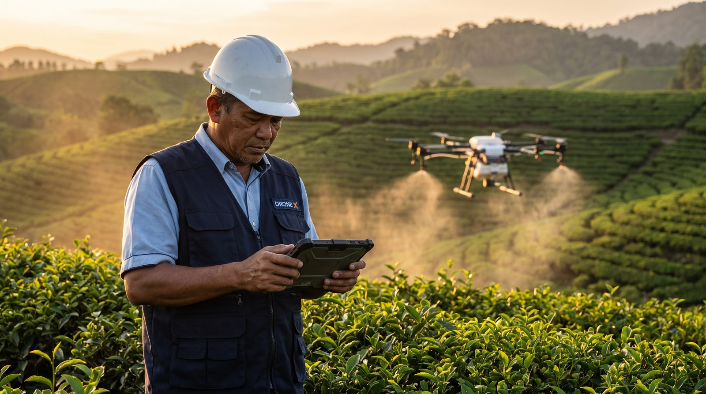

Become a Drone X Certified Pilot加入 Drone X 飞手合作网络Menjadi Juruterbang Bertauliah Drone X
With training, examination and licensing support, become a legal, qualified, professional drone pilot ready to take on real jobs.通过培训、考试与执照流程支持，成为合法、合格、可正式接单的专业无人机飞手。Dengan sokongan latihan, peperiksaan dan proses pelesenan, jadilah juruterbang dron profesional yang sah, layak dan sedia menerima kerja sebenar.
Drone X welcomes anyone aspiring to become a professional pilot to join our network. We provide structured training, exam support, licensing assistance and job matching — helping you go from beginner to a fully licensed drone pilot ready to take on real work.Drone X 欢迎有志成为专业飞手的您加入我们的合作网络。我们提供系统培训、考核支持、执照办理协助及项目对接，帮助您从入门到正式成为可合法接单的无人机飞手。Drone X mengalu-alukan sesiapa yang bercita-cita menjadi juruterbang profesional untuk menyertai rangkaian kami. Kami menyediakan latihan berstruktur, sokongan peperiksaan, bantuan pelesenan dan padanan kerja — membantu anda daripada pemula hingga menjadi juruterbang dron bertauliah yang sedia menerima kerja sebenar.
The Path to Becoming a Licensed Pilot成为合法飞手的流程Laluan Menjadi Juruterbang Bertauliah
Sign Up报名加入Daftar Sertai
Submit basic details and understand the joining requirements and process.提交基本资料，了解并确认加入要求与流程。Hantar butiran asas dan fahami keperluan serta proses penyertaan.
Receive Training接受培训Terima Latihan
Join structured training to learn theory and hands-on skills.参加系统培训，学习理论知识与实操技能。Sertai latihan berstruktur untuk mempelajari teori dan kemahiran praktikal.
Complete Examination完成考试Lengkapkan Peperiksaan
Pass the relevant assessments to confirm flying ability and safety awareness.通过相关考核与评估，确认飞行能力与安全意识。Lulus penilaian berkaitan untuk mengesahkan kemahiran terbang dan kesedaran keselamatan.
Obtain Licence / Qualification获得执照／资格Perolehi Lesen / Kelayakan
Complete the process to obtain a compliant pilot qualification and licence.完成相关流程，取得合规的飞手资格与执照。Lengkapkan proses untuk memperoleh kelayakan dan lesen juruterbang yang mematuhi peraturan.
Start Taking Jobs正式接单Mula Menerima Kerja
Join the Drone X pilot network as a professional pilot ready to legally take on jobs.加入 Drone X 飞手网络，成为可合法接单的专业飞手。Sertai rangkaian juruterbang Drone X sebagai juruterbang profesional yang sedia menerima kerja secara sah.
What We Offer我们提供Apa Yang Kami Tawarkan
- Structured Training系统化培训Latihan BerstrukturDrone fundamentals, hands-on flight practice and operating procedure training.提供无人机基础知识、飞行实操与作业流程训练。Asas dron, latihan penerbangan praktikal dan latihan prosedur operasi.
- Exam & Assessment Support考试与考核支持Sokongan Peperiksaan & PenilaianHelping pilots prepare for and complete relevant assessments and exams.协助飞手完成相关评估与考试准备。Membantu juruterbang bersedia dan melengkapkan penilaian serta peperiksaan berkaitan.
- Licensing Process Assistance执照流程协助Bantuan Proses PelesenanHelp understanding and completing the licence and qualification process required for legal compliance.协助了解并完成合法合规所需的执照与资格流程。Bantuan memahami dan melengkapkan proses lesen serta kelayakan yang diperlukan untuk pematuhan undang-undang.
- Licensed Operating Platform合法作业平台Platform Operasi BertauliahTake on all kinds of drone projects under a fully compliant framework.在合规体系下参与各类无人机项目作业。Menyertai pelbagai projek dron di bawah rangka kerja yang mematuhi peraturan sepenuhnya.
- Operational Insurance Coverage作业保险保障Perlindungan Insurans OperasiEvery job is covered by appropriate insurance, lowering operational risk.每次作业可享有相应保障，降低作业风险。Setiap kerja dilindungi insurans yang sesuai, mengurangkan risiko operasi.
- Steady Job Opportunities稳定项目机会Peluang Kerja Yang StabilMatched with agriculture, business and other drone project needs for steady growth.对接农业、企业及其他无人机项目需求，稳定发展。Dipadankan dengan keperluan projek dron pertanian, perniagaan dan lain-lain untuk perkembangan yang stabil.
Requirements加入条件Keperluan
- Interested in the Drone Industry对无人机行业有兴趣Berminat Dalam Industri DronBeginners and anyone aspiring to become a professional pilot are welcome to join.欢迎新手或有志发展为专业飞手的您加入。Pemula dan sesiapa yang bercita-cita menjadi juruterbang profesional dialu-alukan menyertai.
- Willing to Undergo Training & Assessment愿意接受培训与考核Sanggup Menjalani Latihan & PenilaianMust complete training, examinations and related process requirements.需完成培训、考试及相关流程要求。Perlu melengkapkan latihan, peperiksaan dan keperluan proses berkaitan.
- Responsible & Safety-Conscious具备责任感与安全意识Bertanggungjawab & Sedar KeselamatanPilots must prioritise operational safety, follow regulations and work well in a team.飞手需重视作业安全，遵守规定，团队配合。Juruterbang perlu mengutamakan keselamatan operasi, mematuhi peraturan dan bekerjasama dalam pasukan.
- Relevant Experience Preferred有相关经验者优先Pengalaman Berkaitan DiutamakanExperience with agriculture spraying, aerial mapping or similar operations is an advantage.如具备农业喷洒、航拍测绘等操作经验尤佳。Pengalaman dalam semburan pertanian, pemetaan udara atau operasi berkaitan adalah kelebihan.
Ready to Become a Licensed, Qualified Drone Pilot?准备成为合法合格的无人机飞手？Bersedia Menjadi Juruterbang Dron Bertauliah dan Layak?
Join Drone X and go step by step — from training and examination to licensing and job matching — to become a professional pilot ready to legally take on work!加入 Drone X，从培训、考试到执照与项目对接，一步步成为可合法接单的专业飞手！Sertai Drone X dan lalui setiap langkah — daripada latihan dan peperiksaan hinggalah pelesenan dan padanan kerja — untuk menjadi juruterbang profesional yang sedia menerima kerja secara sah!
Apply to Join立即申请加入Mohon Sertai →